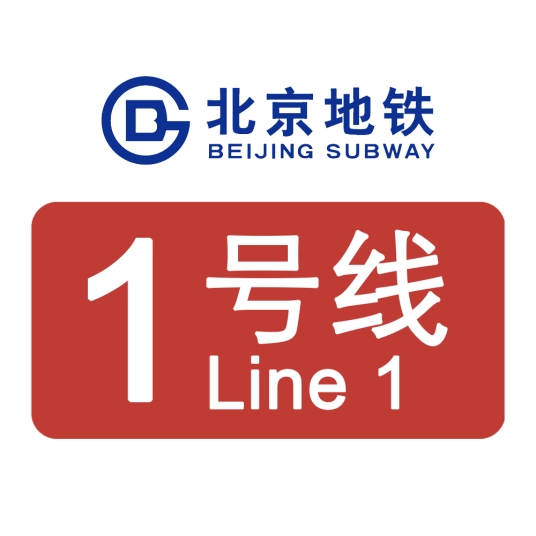
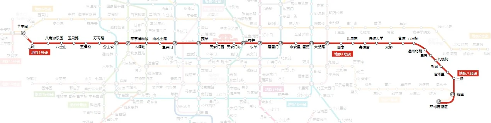
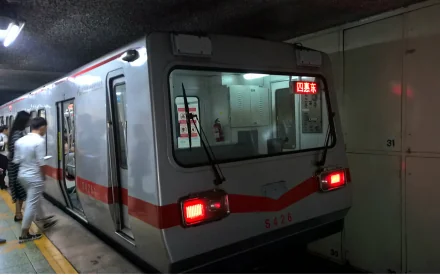
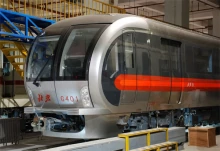

线路走向

车辆设施
DKZ4G

DKZ4型地铁电动客车共31组，于1998年生产，由长春客车厂（今中车长春轨道客车股份有限公司）和北京地铁车辆厂（今北京地铁车辆装备有限公司）负责生产，核定载客1410人/列，编号为01001-01031。其中有19组（现编号01001-01019）在长春客车厂生产，12组（现编号01020-01031）在北京地铁车辆厂生产。
为了应对北京地铁复八线的开通，北京市地铁运营有限公司于1996年开始订购DKZ4型地铁电动客车（车组由DK28、DK29、DK30、DK31组成）。1998年11月16日，第一组GTO-VVVF调频调压电动客车（现编号01001）从长春客车厂运抵北京。1999年2月8日，第一组GTO-VVVF新车载客投入试运行。后在2000年全程运行于北京地铁1号线，该系列列车为北京地铁的第一款GTO-VVVF控制的列车。
为加速列车空调化，DKZ4型列车于2010年开始在北京地铁车辆装备有限公司加装空调（每节拥有4台制冷量为12千瓦的松芝KLDL12AAA空调机组）和内部改造（加装闪灯图和LED显示屏，并对大部分车辆的车窗改为封闭式），最后更名为DKZ4G（最初进行试验的列车为S423和S405）。2015年，北京地铁1号线全部列车的牵引系统均由GTO-VVVF更换为东洋IGBT-VVVF。
SFM04

SFM04型地铁电动客车共39组，于2006年生产。其中SFM04型列车共20组，由中车青岛四方机车车辆股份有限公司负责生产，核定载客1428人/列，编号为01032-01051；SFM04A型列车共19组，由北京地铁车辆装备有限公司负责生产，核定载客1428人/列，编号为01052-01070。SFM04型列车是北京地铁1号线的第一款原装空调车和使用电动门的列车，每个车厢共4对车门，为内藏门，列车两端拥有紧急出口。
SFM01
SFM01型地铁电动客车共27组，于2003年生产，由中车青岛四方机车车辆股份有限公司和北京地铁车辆装备有限公司负责生产，核定载客1416人/列，编号为01071-01078、01084-01094。
SFM02
SFM02型地铁电动客车共5组，于2003年生产，由中车青岛四方机车车辆股份有限公司负责生产，核定载客1416人/列，编号为01079-01083。
SFM07
SFM07型地铁电动客车共6组，于2014年生产，由中车青岛四方机车车辆股份有限公司和北京地铁车辆装备有限公司负责生产，核定载客1416人/列，编号为01095-01100。
BDK06
BDK06型地铁电动客车共12组，第一代于2019年生产，第二代于2021年生产。其中第一代列车共7组，由北京地铁车辆装备有限公司负责生产，核定载客1416人/列，编号为01101-01107；第二代列车共5组，由北京地铁车辆装备有限公司负责生产，核定载客1416人/列，编号为01108-01112。